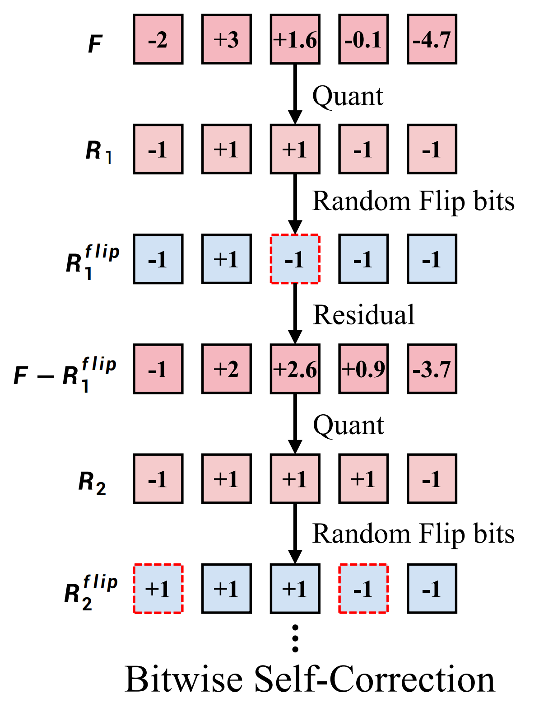

About Infinity
We present Infinity, a Bitwise Visual AutoRegressive Modeling capable of generating high-resolution, photorealistic
images following language instruction. Infinity redefines visual autoregressive model under a bitwise token prediction
framework with an infinite-vocabulary tokenizer & classifier and bitwise self-correction mechanism, remarkably improving
the generation capacity and details. By theoretically scaling the tokenizer vocabulary size to infinity and concurrently
scaling the transformer size, our method significantly unleashes powerful scaling capabilities compared to vanilla VAR.
Infinity sets a new record for autoregressive text-to-image models, outperforming top-tier diffusion models like SD3-Medium
and SDXL. Notably, Infinity surpasses SD3-Medium by improving the GenEval benchmark score from 0.62 to 0.73 and the
ImageReward benchmark score from 0.87 to 0.96, achieving a win rate of 66%.Without extra optimization, Infinity
generates a high-quality 1024x1024 image in 0.8 seconds, making it 2.6x faster than SD3-Medium and establishing
it as the fastest text-to-image model. Models and codes will be released to promote further exploration of Infinity
for visual generation and unified tokenizer modeling.
Several Core Design Details for Infinity
• Pipeline:
Infinity introduces bitwise modeling, which incorporates a bitwise multi-scale visual tokenizer,
Infinite-Vocabulary Classifier (IVC), and Bitwise Self-Correction. When predicting Rk,
the sequence (R1, R2, ..., Rk-1) serves as the prefixed context and the text condition guides the prediction through
a cross attention mechanism. Different from VAR, Infinity performs next-scale prediction with bit labels.
• Bitwise Visual Tokenizer:
Increasing the vocabulary size has significant potential for improving reconstruction and generation quality.
However, directly enlarging the vocabulary in existing tokenizers leads to a substantial increase
in memory consumption and computational burden. To address these challenges and fully exploit the potential
of discrete tokenizers, this paper proposes a new bitwise multi-scale residual quantizer, which significantly
reduces memory usage, enabling the training of extremely large vocabulary, e.g. Vd = 232 or Vd = 264.
• Infinite-Vocabulary Classifier:
Visual tokenizer quantizes continuous features and then gets index labels. Conventional classifier (left) predicts 2d indices.
Infinite-Vocabulary Classifier (right) predicts d bits instead. Slight perturbations to near-zero values in continuous features
cause a complete change of index labels. Bit labels (i.e. quantized features) change subtly and still provide steady supervision.
Besides, parameters of conventional classifiers grow exponentially as d increases, while IVC grows linearly. If d = 32 and h = 2048,
the conventional classifier requires 8.8 trillion parameters, exceeding current compute limits. By contrast, IVC only requires 0.13M
parameters.
• Bitwise Self-Correction:
VAR inherits the teacher-forcing training from LLMs. We find that the teacher-forcing training brings about severe train-test discrepancy
for visual generation. In particular, the teacher-forcing training makes the transformer only refine features in each scale
without the ability to recognize and correct mistakes. Mistakes made in former scales will be propagated and amplified in latter
scales, finally messing up generated images. In this work, we propose Bitwise Self-Correction (BSC)
to address this issue. In particular, we randomly flip the bits in Rk with a probability uniformly
sampled from [0, p], imitating different strengths of errors made in the prediction of the k-th scale. After replacing Rk with
a flipped one as predictions, we recompute the transformer input. Besides, re-quantization is performed to get a new target Rk+1.
We also provide a simplified illustration in the below figure for better understanding. Notably, BSC is accomplished by revising the inputs
and labels of the transformer. It neither adds extra computational cost nor disrupts the original parallel training characteristics.

Overall Performance
On GenEval, our model with a re-writer achieves the best overall score of 0.73. Besides, Infinity also
reaches the highest position reasoning score of 0.49. On DPG. Our model reaches an overall score of 83.46,
surpassing SDXL, Playground v2.5, and DALLE 3. What’s more, Infinity achieves the best relation
score of 90.76 among all open-source T2I models, demonstrating its stronger ability to generate spatially
consistent images based on user prompts.
Human Preference Benchmarks
Tab.2 lists the results of two human preference benchmarks, i.e., ImageReward and HPSv2.1.
Infinity reaches the highest ImageReward and HPSv2.1, indicating our method could generate images that
are more appealing to humans.
Inference Latency
As in Tab.2, Infinity demonstrates a significant advantage in generation speed
compared to diffusion models at around 2 billion parameters (2.6× speedup to SD3-Medium). Furthermore, our tests reveal that the speed
advantage of Infinity becomes more substantial as the model size increases. Infinity achieves 7× faster
inference latency compared to SD3.5 at the same 8 billion parameters.
Scaling Vocabulary
We analyze the impact of scaling the vocabulary size under consistent training hyperparameters throughout.
Vocabulary size Vd = 216 converges faster and achieves better results for small models (125M and 361M parameters).
As we scale up the model size to 2.2B, Infinity with a vocabulary size Vd = 232 beats that
one with Vd = 216. Experiment with 5M high-quality image-text pair data under 256 × 256 resolution.
Scaling Model Size
We analyze the impact of scaling model size under consistent training hyperparameters throughout
Experiment with 10M pre-training data and 256 × 256 resolution. Validation loss smoothly decreases as a function
of the model size and training iterations. Besides, Validation loss is a strong predictor of overall model performance.
There is a strong correlation between validation loss and holistic image evaluation metrics.
BibTeX
@misc{han2024infinityscalingbitwiseautoregressive,
title={Infinity: Scaling Bitwise AutoRegressive Modeling for High-Resolution Image Synthesis},
author={Jian Han and Jinlai Liu and Yi Jiang and Bin Yan and Yuqi Zhang and Zehuan Yuan and Bingyue Peng and Xiaobing Liu},
year={2024},
eprint={2412.04431},
archivePrefix={arXiv},
primaryClass={cs.CV},
url={https://arxiv.org/abs/2412.04431},
}